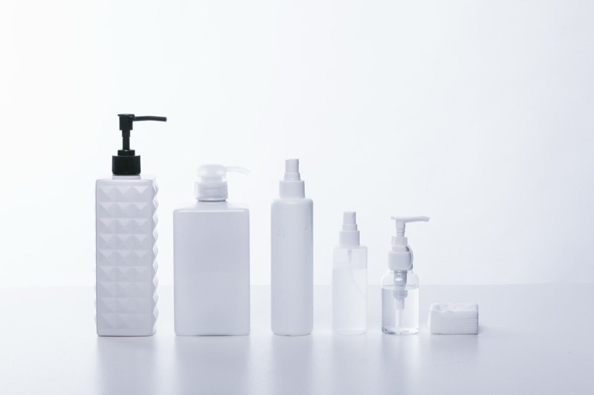

「新作が出るたびに気になって、また買っちゃった」
友達にそう話したら、「それ、去年も同じこと言ってなかった？」と笑われました。言われてみれば、たしかにそうだったのです。
気づけば、洗面台が試供品だらけになっていました
SNSで話題の美容液、雑誌で紹介されていた韓国コスメ、友人がおすすめしてくれた導入化粧水。良さそうなものを見つけるたびに試して、気に入らなければまた次を探す。その繰り返しで、いつの間にか洗面台の棚は使いかけのボトルでいっぱいになっていました。
「もっと自分に合うものがあるはず」。そう思って探し続けているつもりでしたが、今思えば、ただ新しいものに飛びついていただけだったのかもしれません。効果を感じる前に次のものが気になって、結局どれも中途半端なまま使い終わらずに増えていく。そんな状態が、もう何年も続いていました。
「なんとなく」で選ぶことに疲れていました
正直なところ、コスメ選びに疲れていました。新商品の情報を追いかけるのは楽しいはずなのに、いつからか「これを買わないと乗り遅れる」というような、義務感に近い気持ちになっていたのです。
友達に指摘されたその日、久しぶりに洗面台をちゃんと片付けてみました。半分も使っていない化粧水が5本、開封すらしていない美容液が3本。それを見て、さすがに自分でもおかしいと思いました。「これだけあるのに、私は自分の肌に何が合うのか、結局分かっていない」。そう気づいた瞬間でした。
「これでいい」と思えるようになるまで
それから、新しいものを探すのをいったんやめてみることにしました。今持っているものの中から、使い切っていないものを順番に使ってみる。派手な効果はなくても、肌の調子が明らかに悪くなるものもありません。「これで十分だったんだ」と、拍子抜けするくらい普通に感じました。
新商品の情報が目に入っても、「今使っているものを使い切ってから」と、一度立ち止まる癖がつきました。それだけで、気持ちがずいぶん楽になりました。合わないものを探して彷徨っていたのではなく、単に立ち止まる勇気がなかっただけなのだと思います。
今は、これでいい
今も特別なスキンケアをしているわけではありません。ただ、新しいものに手を伸ばす前に、「今のままで困っていることは何か」を一度考えるようになりました。困っていなければ、それでいい。それだけのことに、ずいぶん遠回りをして辿り着いた気がします。
「それ、去年も同じこと言ってなかった？」と言われることは、もうなくなりました。
この記事について
美容・コスメジャンルにおける、一人称の体験談エッセイの執筆サンプルです。共感を軸にした構成・語り口で執筆しています。
同じ流れで、ご依頼のジャンル・トンマナに合わせた体験談記事を執筆します。
執筆のご相談はこちら